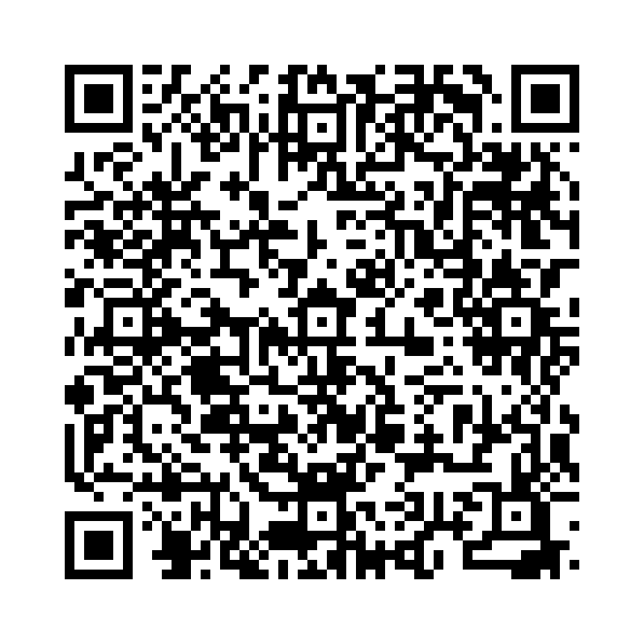

「turn」は「方向を変える」「回す」「状態が変化する」など、さまざまな意味で使われる動詞です。
以下の単語を正しい語順に並べ替えて、正しい英文を作りましょう。

問題 1： (left / at / turn / the / corner) - その角で左に曲がってください。
解答： Turn left at the corner.
解説： 「Turn left at the corner.」は「その角で左に曲がってください。」という意味です。
問題 2： ( turn / the / please / page) - ページをめくってください。
解答： Please turn the page.
解説： 「Please turn the page.」は「ページをめくってください。」という意味です。
問題 3： (turned / off / he / the / light) - 彼は電気を消しました。
解答： He turned off the light.
解説： 「He turned off the light.」は「彼は電気を消しました。」という意味です。
問題 4： (turned / the / she / open / key / to / the / door) - 彼女はドアを開けるために鍵を回しました。
解答： She turned the key to open the door.
解説： 「She turned the key to open the door.」は「彼女はドアを開けるために鍵を回しました。」という意味です。
問題 5： ( the / bottle / turn / upside / down) - ボトルを上下逆さまにしてください。
解答： Turn the bottle upside down.
解説： 「Turn the bottle upside down.」は「ボトルを上下逆さまにしてください。」という意味です。
問題 6： (I / my / head / to / look / turned / at / her) - 私は彼女を見るために頭を向けました。
解答： I turned my head to look at her.
解説： 「I turned my head to look at her.」は「私は彼女を見るために頭を向けました。」という意味です。
問題 7： (the / turn / red / in / autumn / leaves) - 秋には葉っぱが赤くなります。
解答： The leaves turn red in autumn.
解説： 「The leaves turn red in autumn.」は「秋には葉っぱが赤くなります。」という意味です。
問題 8： (you / turn / can / the / music / down / ?) - 音楽の音量を下げてくれますか？
解答： Can you turn the music down?
解説： 「Can you turn the music down?」は「音楽の音量を下げてくれますか？」という意味です。
問題 9： ( your / it's / turn / to / play) - あなたの番です。
解答： It's your turn to play.
解説： 「It's your turn to play.」は「あなたの番です。」という意味です。
問題 10： (he / to / the / teacher / for / turned / help) - 彼は助けを求めて先生の方を向きました。
解答： He turned to the teacher for help.
解説： 「He turned to the teacher for help.」は「彼は助けを求めて先生の方を向きました。」という意味です。